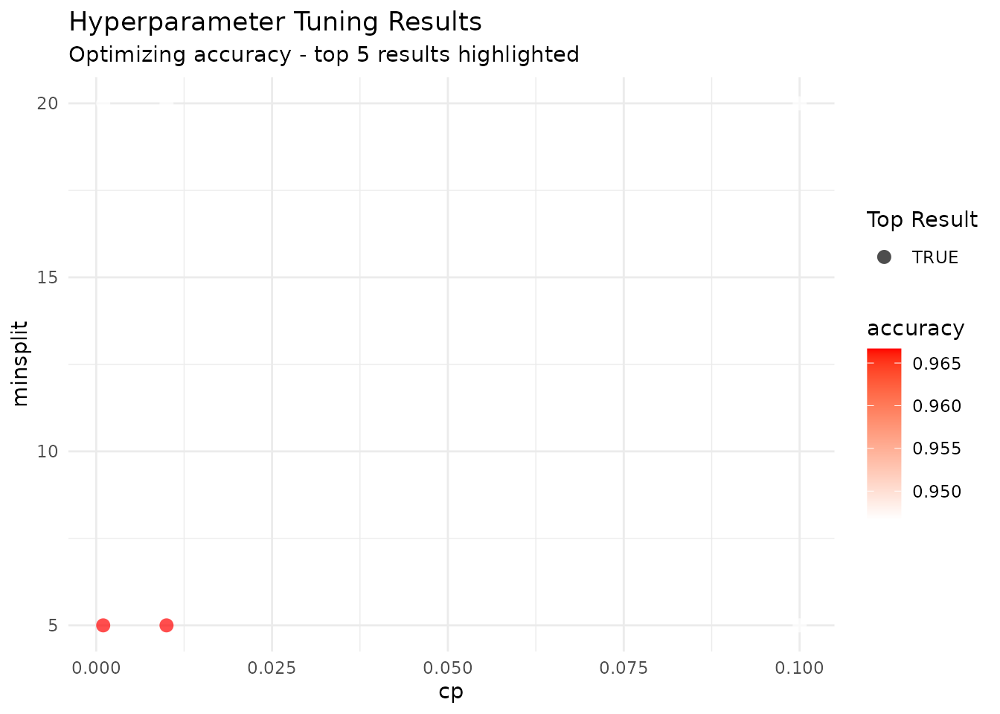
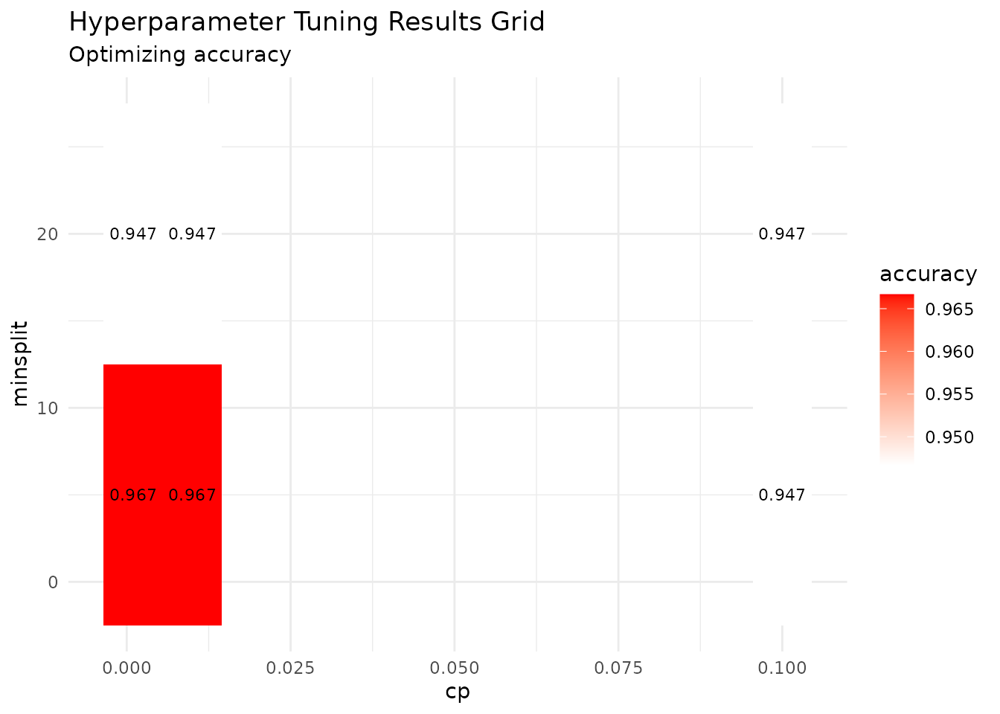
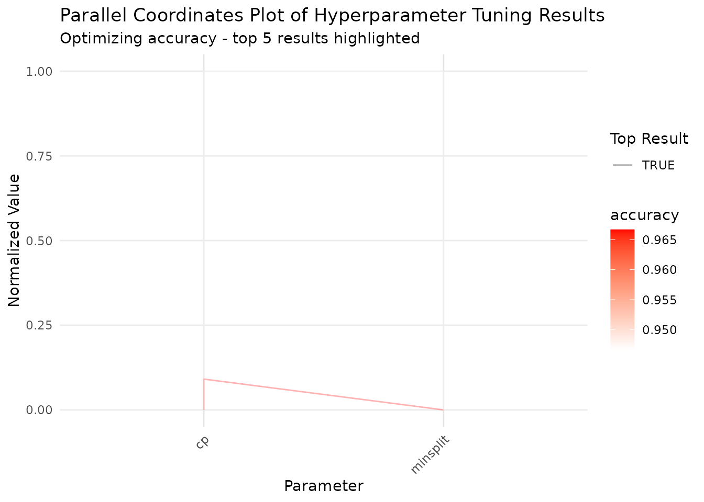
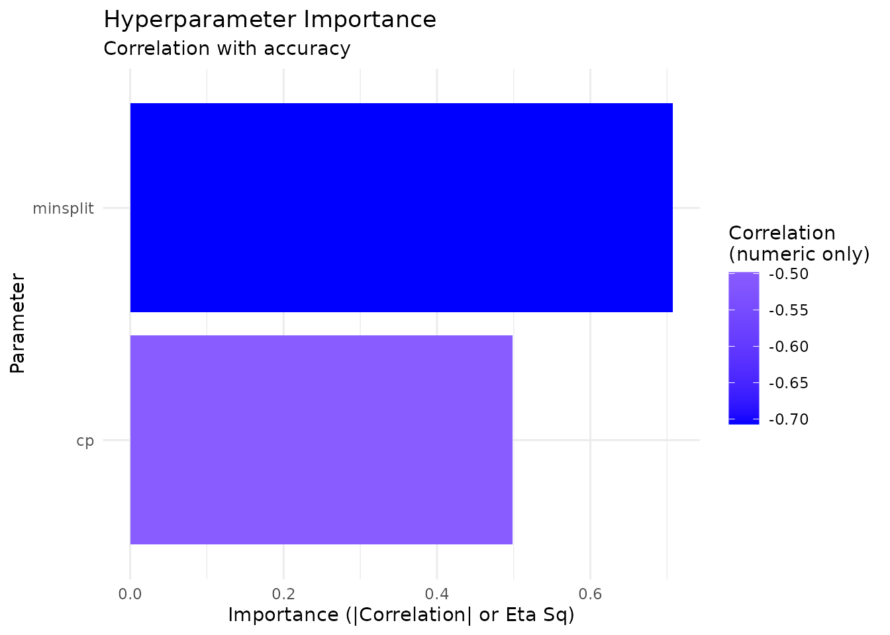

library(tidylearn)
library(dplyr)
#>
#> Attaching package: 'dplyr'
#> The following objects are masked from 'package:stats':
#>
#> filter, lag
#> The following objects are masked from 'package:base':
#>
#> intersect, setdiff, setequal, unionOverview
tl_model() fits one model with the hyperparameters you
name. Two families build on that:
-
Tuning searches a space of hyperparameters and
returns the model fitted with the winner.
tl_tune_grid()walks every combination;tl_tune_random()samples from ranges. - Pipelines bundle preprocessing, a set of models, and an evaluation scheme into one object you can run, save, reload, and predict from.
The two compose: tune to find the settings, then put the winning settings in a pipeline so the whole recipe is reproducible.
Grid Search
tl_tune_grid() takes a named list of candidate values,
one entry per hyperparameter, and cross-validates every combination.
tuned_tree <- tl_tune_grid(
iris, Species ~ .,
method = "tree",
param_grid = list(cp = c(0.001, 0.01, 0.1), minsplit = c(5, 20)),
folds = 3,
verbose = FALSE
)What comes back is an ordinary tidylearn model, already fitted with the winning settings, so everything you would normally do with a model still works:
print(tuned_tree)
#> tidylearn Model
#> ===============
#> Paradigm: supervised
#> Method: tree
#> Task: Classification
#> Formula: Species ~ .
#>
#> Training observations: 150The search itself is attached as a "tuning_results"
attribute:
tuning <- attr(tuned_tree, "tuning_results")
names(tuning)
#> [1] "param_grid" "results" "best_params" "best_metric" "metric"
#> [6] "maximize"
tuning$results
#> mean_metric cp minsplit
#> 1 0.9666667 0.001 5
#> 2 0.9466667 0.001 20
#> 3 0.9666667 0.010 5
#> 4 0.9466667 0.010 20
#> 5 0.9466667 0.100 5
#> 6 0.9466667 0.100 20
# The settings that won, and the score they won with
tuning$best_params
#> $cp
#> [1] 0.001
#>
#> $minsplit
#> [1] 5
tuning$best_metric
#> [1] 0.9666667The winning values reach the underlying fit, not just the report:
tuned_tree$fit$control$cp
#> [1] 0.001Choosing the metric
Without a metric, tuning uses accuracy for
classification and RMSE for regression. Name one explicitly and the
optimisation direction follows from the metric: rmse,
mse, mae and mape are minimised,
everything else maximised. Pass maximize only to override
that.
tuned_reg <- tl_tune_grid(
mtcars, mpg ~ .,
method = "forest",
param_grid = list(mtry = c(2, 4), ntree = c(100, 300)),
folds = 3,
metric = "rmse",
verbose = FALSE
)
attr(tuned_reg, "tuning_results")$best_params
#> $mtry
#> [1] 4
#>
#> $ntree
#> [1] 100Starting from a default grid
tl_default_param_grid() supplies a reasonable starting
grid per method, at three sizes. Use it as a first pass, then narrow
around whatever won.
tl_default_param_grid("tree", size = "small")
#> $cp
#> [1] 0.01 0.10
#>
#> $minsplit
#> [1] 10 20
tl_default_param_grid("forest", size = "medium")
#> $mtry
#> [1] 2 3 4 5
#>
#> $ntree
#> [1] 100 300 500
tuned_default <- tl_tune_grid(
iris, Species ~ .,
method = "tree",
param_grid = tl_default_param_grid("tree", size = "small"),
folds = 3,
verbose = FALSE
)
attr(tuned_default, "tuning_results")$best_params
#> $cp
#> [1] 0.01
#>
#> $minsplit
#> [1] 10Random Search
Grid search cost is the product of the candidate counts, so it grows
quickly. tl_tune_random() samples n_iter
points instead.
How param_space describes each parameter decides how it
is sampled:
| Specification | Sampled as |
|---|---|
Two numbers, c(lo, hi)
|
Uniform on the continuous interval |
| Three or more numbers | Drawn from exactly those values |
| A character vector | Drawn from those levels |
| A function of no arguments | Whatever the function returns |
A two-element vector is always continuous, so
minsplit = c(2, 40) samples values like 11.34. For a
parameter that has to be a whole number, list the candidates
instead:
tuned_random <- tl_tune_random(
iris, Species ~ .,
method = "tree",
param_space = list(
cp = c(0.0001, 0.2), # continuous
minsplit = c(2, 5, 10, 20, 30, 40) # drawn from these six
),
n_iter = 8,
folds = 3,
seed = 42,
verbose = FALSE
)
attr(tuned_random, "tuning_results")$best_params
#> $cp
#> [1] 0.0628054
#>
#> $minsplit
#> [1] 40Pass seed whenever you want the search to be
reproducible. Without it, two runs sample different points and can pick
different winners.
Looking at the Search
tl_plot_tuning_results() reads the attribute and draws
it four ways.
tl_plot_tuning_results(tuned_tree, plot_type = "scatter")
"grid" draws the two-parameter heat map that grid search
is built for:
tl_plot_tuning_results(tuned_tree, plot_type = "grid")
"parallel" puts every parameter on its own axis, which
scales past two:
tl_plot_tuning_results(tuned_tree, plot_type = "parallel")
"importance" ranks parameters by how much of the score
variation each one explains — a quick read on which knob is worth
refining:
tl_plot_tuning_results(tuned_tree, plot_type = "importance")
Every one of these is a ggplot2 object, so add to it as usual.
Pipelines
A pipeline records preprocessing, the models to fit, and how to
evaluate them. Building it does no work; tl_run_pipeline()
does.
split <- tl_split(iris, prop = 0.7, stratify = "Species", seed = 42)
pipe <- tl_pipeline(
split$train, Species ~ .,
preprocessing = list(standardize = TRUE, dummy_encode = FALSE),
models = list(
tree = list(method = "tree"),
forest = list(method = "forest", ntree = 300)
),
evaluation = list(
validation = "cv",
cv_folds = 3,
metrics = c("accuracy", "f1"),
best_metric = "accuracy"
)
)
print(pipe)
#> Tidylearn Pipeline
#> =================
#> Formula: Species ~ .
#> Data: 105 observations, 5 variables
#> Preprocessing: impute_missing, standardize
#> Models: tree, forest
#> Evaluation: cv (3 folds)
#> Metrics: accuracy, f1
#> Best metric: accuracyAnything you leave out of preprocessing or
evaluation takes its default, so a partial list is fine. An
unrecognised name is an error rather than a step that quietly does
nothing.
tl_pipeline(split$train, Species ~ .,
preprocessing = list(scale_method = "standardize"))
#> Error:
#> ! Unknown preprocessing step(s): scale_method. Available steps: impute_missing, standardize, dummy_encode.Running it
run <- tl_run_pipeline(pipe, verbose = FALSE)
names(run$models)
#> [1] "tree" "forest"
print(run)
#> Tidylearn Pipeline
#> =================
#> Formula: Species ~ .
#> Data: 105 observations, 5 variables
#> Preprocessing: impute_missing, standardize
#> Models: tree, forest
#> Evaluation: cv (3 folds)
#> Metrics: accuracy, f1
#> Best metric: accuracy
#>
#> Results
#> =======
#> Best model: tree
#> Performance:
#> tree: accuracy = 0.9714 (best)
#> forest: accuracy = 0.9714tl_get_best_model() returns the model that won on
best_metric:
best <- tl_get_best_model(run)
best$spec$method
#> [1] "tree"Predicting through the pipeline
This is the reason to use a pipeline rather than a bare model. Predicting on raw new data replays the preprocessing the pipeline learned during the run, applying the training centre and scale rather than recomputing them from the new rows.
preds <- tl_predict_pipeline(run, new_data = split$test, model_name = "forest")
head(preds)
#> # A tibble: 6 × 1
#> .pred
#> <fct>
#> 1 setosa
#> 2 setosa
#> 3 setosa
#> 4 setosa
#> 5 setosa
#> 6 setosa
mean(preds$.pred == split$test$Species)
#> [1] 0.9333333Omit model_name to predict with the best model.
Saving and reloading
path <- tempfile(fileext = ".rds")
tl_save_pipeline(run, path)
reloaded <- tl_load_pipeline(path)
names(reloaded$models)
#> [1] "tree" "forest"
# Predictions survive the round trip, preprocessing included
reloaded_preds <- tl_predict_pipeline(
reloaded, new_data = split$test, model_name = "forest"
)
identical(reloaded_preds$.pred, preds$.pred)
#> [1] TRUETuning into a Pipeline
Tuning tells you the settings; the pipeline holds them alongside the preprocessing that produced them.
tuned <- tl_tune_grid(
split$train, Species ~ .,
method = "forest",
param_grid = list(mtry = c(2, 3), ntree = c(100, 300)),
folds = 3,
verbose = FALSE
)
best_params <- attr(tuned, "tuning_results")$best_params
best_params
#> $mtry
#> [1] 2
#>
#> $ntree
#> [1] 100
final <- tl_pipeline(
split$train, Species ~ .,
models = list(
forest = c(list(method = "forest"), best_params)
),
evaluation = list(cv_folds = 3, metrics = "accuracy",
best_metric = "accuracy")
)
final_run <- tl_run_pipeline(final, verbose = FALSE)
final_preds <- tl_predict_pipeline(final_run, new_data = split$test)
mean(final_preds$.pred == split$test$Species)
#> [1] 0.9333333Cost
Tuning multiplies fits. A grid of g combinations at
k folds is g × k fits, plus one more to build the
final model. The tree grid at the top of this vignette is 6 combinations
× 3 folds = 18 fits, 19 with the final model, of a method that takes
milliseconds. The same grid on method = "xgboost" with 1000
rounds is the same 19 fits of something much slower.
Two levers, in the order worth pulling:
- Fewer folds. Going from 5 to 3 removes 40% of the work and still gives out-of-sample estimates.
-
Random over grid.
tl_tune_random(n_iter = 10)costs a fixed 10 points regardless of how many parameters you are searching, where a grid over the same parameters costs their product.
tl_compute_advisor() estimates the cost of a single fit
before you multiply it by the search — worth a look before starting a
long grid.
Where to Go Next
-
AutoML (
vignette("automl")) searches across methods rather than within one, and manages its own budget. -
Diagnostics (
vignette("diagnostics")) covers what to check once you have a fitted model.